A Suckless Phone
PinePhone (Pro) + SXMO
wose
2022-03-12 14:00
Disclaimer
Slides, Links, …
Hardware
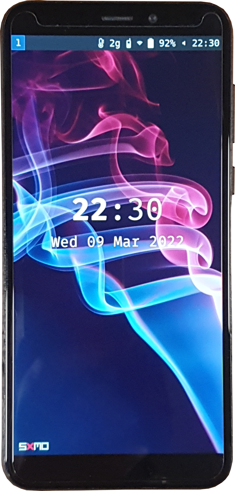 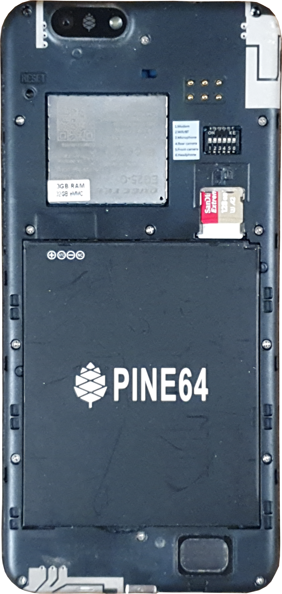
Specs
| PinePhone | PinePhone Pro | |
|---|---|---|
| Chipset | Allwinner A64 | Rockchip rk3399s |
| CPU | 4x 1152 MHz Cortex-A53 | 4x1.5 GHz Cortex-A53 & 2x2Ghz Cortex-A72 |
| GPU | Mali-400 MP2 | Mali-T860 MP4 |
| Display | 720x1440 IPS | 720x1440 IPS |
| eMMC | 16 GB / 32 GB | 128 GB |
| RAM | 2 GB / 3 GB | 4 GB |
| Front Cam | 2MP, f/2.8, 1/5″ | 8MP, OmniVision OV8858 |
| Main Cam | 5MP, 1/4″, LED Flash | 13MP, Sony iMX258, LED Flash |
| Bluetooth | 4.0 | 5.0 |
| Modem | Quectel EG25-G | Quectel EG25-G |
Modem
- LTE-FDD, LTE-TDD
- WCDMA
- GSM
- A-GPS
- GLONASS
- Firmware
Overview
POGO Pins und DIP Schalter

Hardware Addons
- Convergence Dock
- LORA
- Semtech SX1262
- Wireless Charging
- Qi Wireless
- Wireless Power Consortium
- Fingerabdrucksensor
- PixelAuth P2SDS-NABL2-S05
- Keyboard
- 6000 mAh
- IP5209 charging controller
- EM85F684A USB controller
- https://xff.cz/git/pinephone-keyboard
Cyberpunk by Martijn Braam
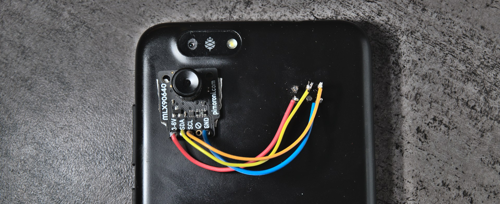
Schaltpläne
Bestückungspläne
Software
Motivation
Downstream Kernel
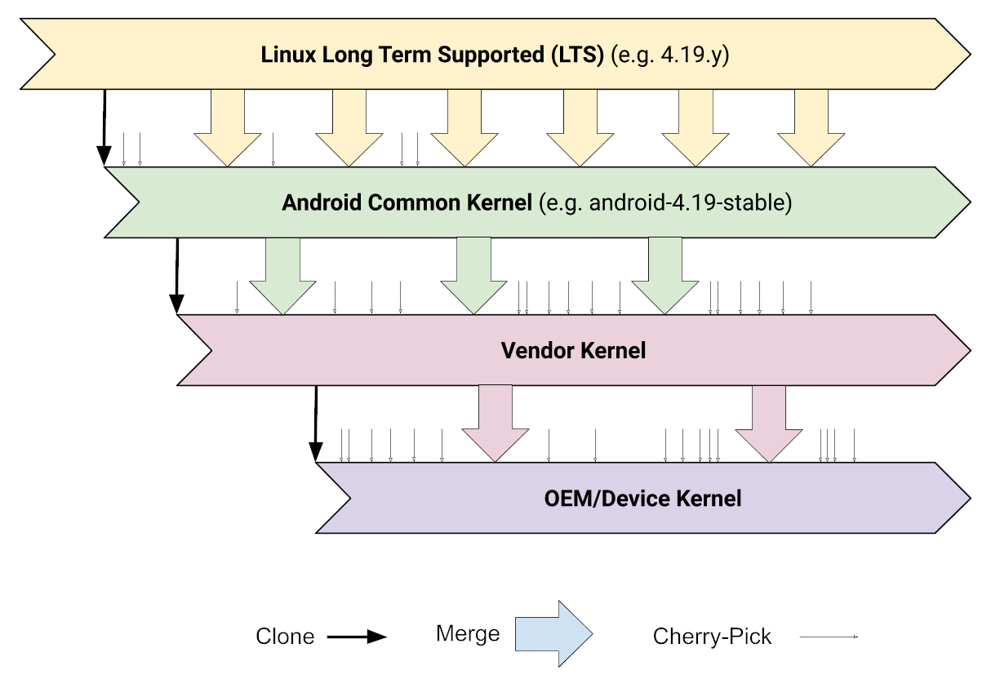
Downstream Status
| Kernel | OnePlus 6 downstream |
| Branch/Tag | lineage-18.1 |
| Branched from | v4.9.227 |
| Total changes | +5,655,241 / -29,256 |
Mobile Kernel Mainline
Boot
Distributionen
Multi Distro Image
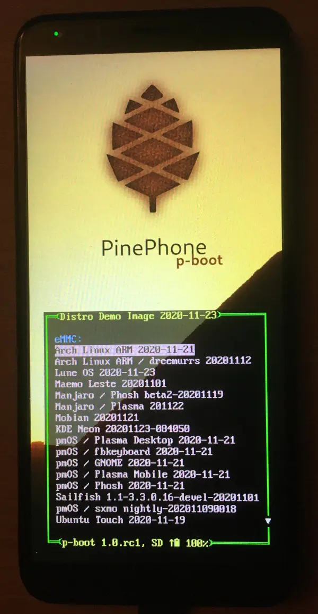
Mobile UIs
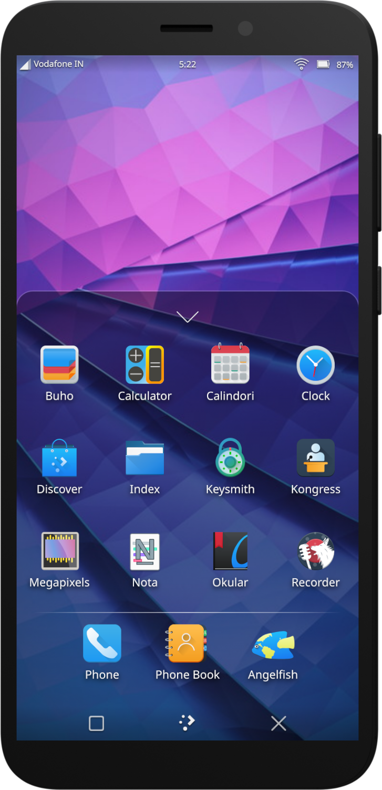 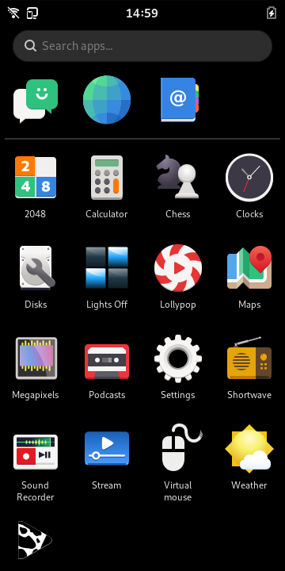
SXMO - Simple X Mobile
SXMO - Tools
| Xorg | Wayland | |
|---|---|---|
| Window Manager/Compositor | DWM | sway |
| Terminal | st | foot |
| Menu | dmenu | bemenu |
| Virtual Keyboard | svkbd | wvkbd |
| Desktop Widgets | conky | wayout |
- lisgd
- tinydm
- ModemManager
- NetworkManager
SXMO - Buttons
- Volume Up
- 1 tap Context Menu
- 2 taps System Menu
- 3 taps Window Menu
- Volume Down
- 1 tap Toggle Keyboard
- 2 taps Toggle Layout
- 3 taps Kill Window
- Power
- 1 tap Lock Screen
- 2 taps Lock Screen (On)
- 3 taps Terminal
SXMO - Gesten
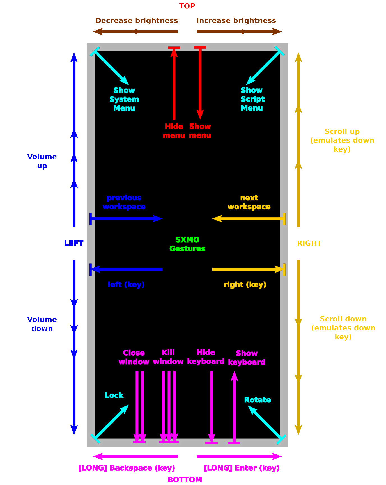
SXMO - Menusystem
- Toucheingabe
- Hardwareknöpfe
SXMO - Konfiguration
$XDG_CONFIG_DIR(~/.config/sxmo/)profile- SXMO spezifische Umgebungsvariablen
~/.profilewird davor von tinydm geladen
xinitswaycontacts.tsv- Telefonnummer -> Name
block.tsv- geblockte Nummern
sfeedrcuserscripts/- landen automatisch im Menusystem
SXMO - Hooks
- Standard Hooks in
/usr/share/sxmo/default_hooks/ - Benutzer Hooks in
$XDG_CONFIG_HOME/sxmo/hooks/
hooks/sxmo_hook_ring.shhooks/sxmo_hook_pickup.shhooks/sxmo_hook_lisgdstart.shhooks/sxmo_hook_desktopwidget.shhooks/sxmo_hook_contextmenu.sh
SXMO - Hooks Beispiel
sxmo_hook_ring.sh
#!/bin/sh # This script is executed (asynchronously) when you get an incoming call # You can use it to play a ring tone # $1 = Contact Name or Number (if not in contacts) # Start the mpv ring until another hook kill it or the max (10) is reached mpv --quiet --no-video --loop=10 /usr/share/sxmo/ring.ogg & MPVID=$! echo "$MPVID" > "$XDG_RUNTIME_DIR/sxmo.ring.pid" # Vibrate while mpv is running while kill -0 $MPVID; do sxmo_vibrate 1500 sleep 0.5 done
SXMO - Umgebungsvariablen
$TERMCMD$BROWSER$EDITOR
$KEYBOARD_ARGS-o | clickclack -f /usr/share/sxmo/keytap.wav
Zusammenfassung
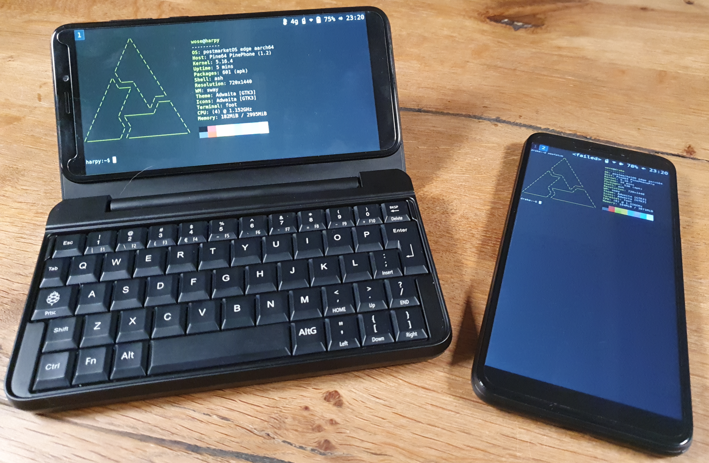
Fragen/Ideen
| WWW | https://zuendmasse.de |
| wose@zuendmasse.de | |
| IRC libera.chat | wose |
| Matrix | @wose:zuendmasse.de |
| GitHub/GitLab/sr.ht | wose |